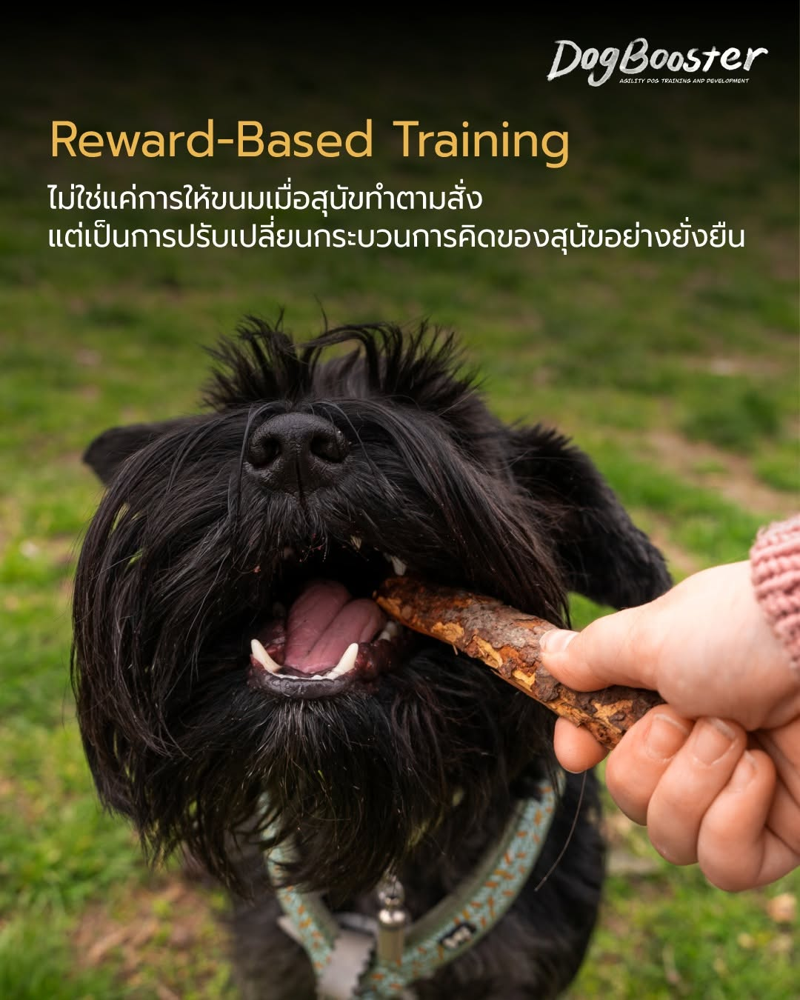

การฝึกแบบ Reward-Based ไม่ใช่แค่การป้อนขนม แต่คือการทำให้สุนัขเห็น “คุณค่า” ในตัวเราและพฤติกรรมที่เราต้องการ
เมื่อเขาสนุก เขาจะอยากเรียนรู้
เมื่อเขาเชื่อใจ เขาจะยอมทำตาม
และเมื่อเขาได้ “เลือก” เอง พฤติกรรมนั้นจะอยู่กับเขาไปตลอดกาล
เน้นให้สุนัข “เลือก” ที่จะทำพฤติกรรมที่ดีด้วยตัวเอง มากกว่าการถูกบังคับ สุนัขจะเรียนรู้ว่าการตัดสินใจเลือกสิ่งที่เราต้องการนำไปสู่ผลลัพธ์ที่ยอดเยี่ยมเสมอ เมื่อสุนัขรู้สึกว่าเขามีอำนาจในการตัดสินใจ เขาจะมีความกระตือรือร้น และจดจำสิ่งที่เรียนรู้ได้ดีกว่าการทำตามเพราะกลัวถูกลงโทษ
ในระบบนี้ เราไม่ได้ใช้รางวัลเพื่อ “ติดสินบน” แต่ใช้เพื่อ “สร้างคุณค่า” ให้กับพฤติกรรมหรืองานที่เราต้องการ เช่น การเรียกให้กลับมาหา (Recall) หากเราสร้างคุณค่าให้การกลับมาหาเจ้าของสูงกว่าการไปวิ่งไล่กระรอก สุนัขจะเลือกกลับมาหาเราโดยอัตโนมัติ เพราะสมองของเขาเชื่อมโยงพฤติกรรมนั้นเข้ากับความรู้สึกเชิงบวกอย่างรุนแรง
การฝึกแบบใช้รางวัลช่วยเสริมสร้างสายสัมพันธ์ระหว่างผู้ฝึกและสุนัข เมื่อการฝึกเป็นเรื่องสนุกและไม่มีความกลัวเข้ามาเกี่ยวข้อง สุนัขจะมองว่าเจ้าของคือแหล่งของสิ่งที่น่าตื่นเต้นและปลอดภัย ความเชื่อใจนี้เองที่เป็นรากฐานสำคัญในสถานการณ์ที่ยากลำบากหรือมีสิ่งเร้าสูง ซึ่งสุนัขที่ฝึกด้วยความกลัวมักจะหลุดการควบคุมได้ง่ายกว่า
ความผิดพลาดไม่ใช่เรื่องน่าตำหนิ แต่เป็น “ข้อมูล” เมื่อสุนัขทำผิด เราแค่ไม่ให้รางวัลและเริ่มใหม่ กระบวนการนี้ทำให้สุนัขไม่เครียดและกล้าที่จะลองผิดลองถูกเพื่อหาคำตอบที่ถูกต้อง ทำให้เขากลายเป็นสุนัขที่ “คิดเป็น”
การได้รับรางวัลจะกระตุ้นการหลั่งโดปามีนในสมอง ซึ่งช่วยในเรื่องความจำและการเรียนรู้ พฤติกรรมที่ได้รับการเสริมแรงเชิงบวกบ่อย ๆ จะกลายเป็นนิสัยที่ฝังลึกในระบบประสาท ทำให้ได้ผลลัพธ์ที่คงเส้นคงวาแม้เวลาจะผ่านไปนาน
ลองเปลี่ยนจากการ “บังคับ” มาเป็นการ “สร้างแรงจูงใจ” ดูนะคะ แล้วคุณจะเห็นความเปลี่ยนแปลงที่ยั่งยืน 🦴✨
สอบถาม / เริ่มฝึกกับ DogBooster